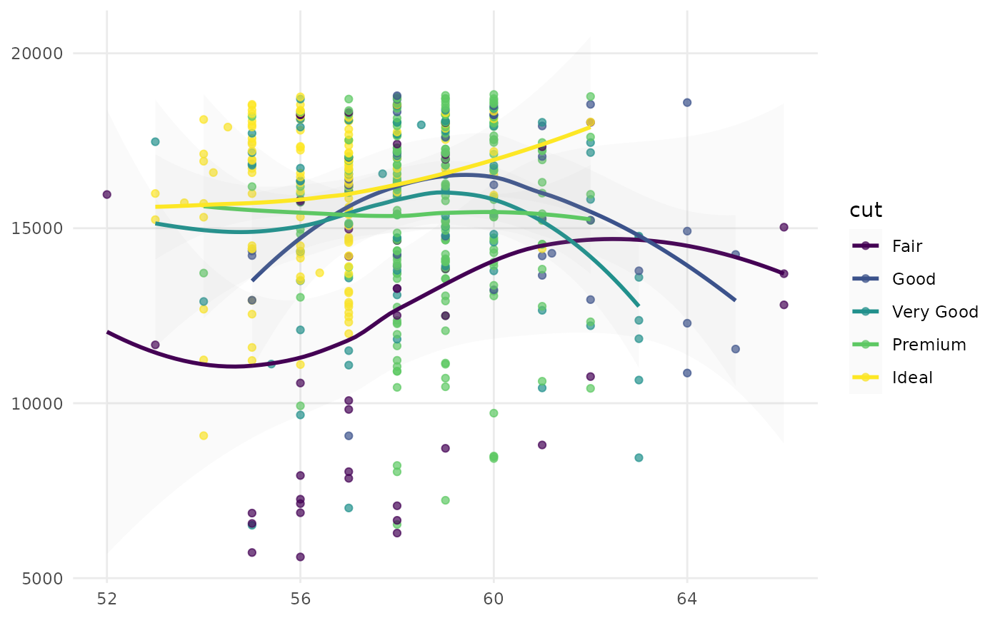
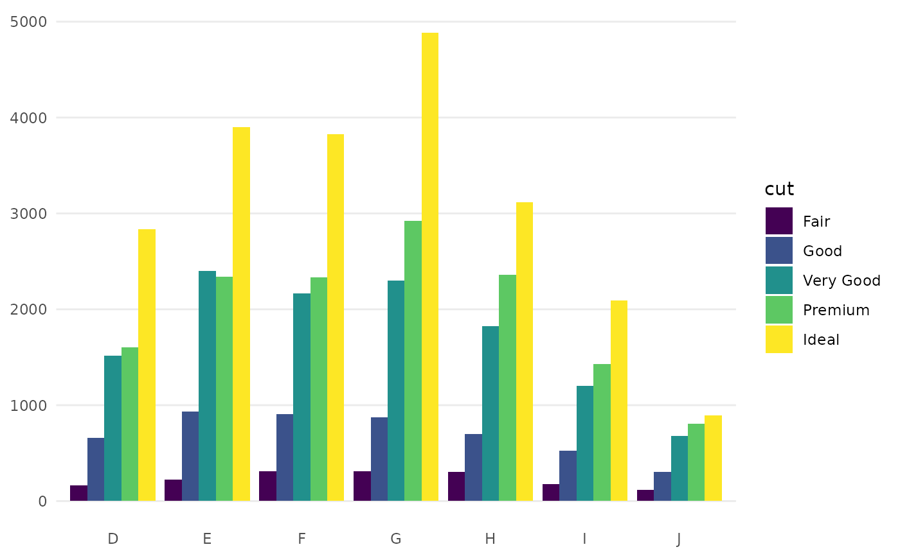

Utility functions that return simple ggplot2 examples to
demonstrate discrete color/fill scales.
Usage
example_scatterplot()
example_barplot()
Details
example_scatterplot() creates a scatter plot of large diamonds
(carat >= 2.2), mapping table to the x‑axis, price to the y‑axis,
and cut to color.
example_barplot() creates a side‑by‑side bar chart of diamond counts
by color, grouped by cut via fill.
Examples
example_scatterplot()
#> `geom_smooth()` using formula = 'y ~ x'

example_barplot()
